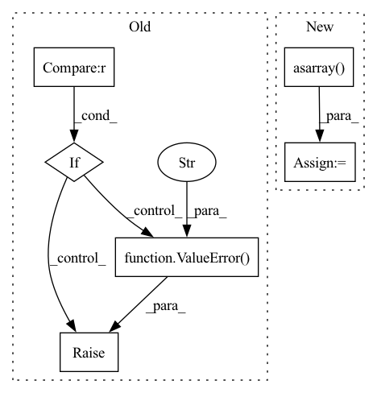

Pattern ID :4589
Before Change
phot_sum[i] = np.sum(photons[ix], axis=0)
return pos_av, phot_sum
if self.mode == "coords" :
assert phot is not None
frame = self.psf.forward(x, phot).squeeze().numpy()
cluster_frame, _ = label(frame, self.kernel)
clusix = coord_2_cluster_ix(x.numpy(), self.corner, self.dist_thres, cluster_frame)
pos_clus, phot_clus = cluster_average(x.numpy(), phot.numpy(), clusix)
pos_clus, phot_clus = torch.from_numpy(pos_clus), torch.from_numpy(phot_clus)
Filter by photon threshold
ix_above_thres = phot_clus > self.phot_thres
return pos_clus[ix_above_thres, :], phot_clus[ix_above_thres]
elif self.mode == "frame":
raise NotImplementedError("Not implemented.")
else:
raise ValueError("Wrong switch for mode of connected components." )
if __name__ == "__main__":
from sklearn.datasets.samples_generator import make_blobsAfter Change
clus_bool = cluster_frame >= 1
clus_ix = cluster_frame[clus_bool]
phot_in_clus = x_[clus_bool]
clus_mat_coord = np.asarray( np.asarray(clus_bool).nonzero()) .transpose()
pos_clus, phot_clus = cluster_average(clus_mat_coord, phot_in_clus, clus_ix)
pos_clus, phot_clus = torch.from_numpy(pos_clus), torch.from_numpy(phot_clus)In pattern: SUPERPATTERN
Frequency: 3
Non-data size: 6
Instances Fragment ID: 16547068
Project Name: turagalab/decode
Commit Name: 5a56ef98b578b18514d42107cc6b8e92075fdbc7
Time: 2019-04-02
Author: gitdev@LRM.photo
File Name: deepsmlm/neuralfitter/post_processing.py
M Class Name: ConnectedComponents
N Class Name: ConnectedComponents
M Method Name: forward(2)
N Method Name: forward(3)
M Parent Class:
N Parent Class:
M File Name: deepsmlm/neuralfitter/post_processing.py
N File Name: deepsmlm/neuralfitter/post_processing.py
M Start Line: 123
M End Line: 176
N Start Line: 138
N End Line: 157
Before Change
self.intervals = intervals
def ppf(self, q):
if np.any(q) > 1 or np.any(q) < 0:
raise ValueError("All percentiles must be in [0, 1]" )
return self.H(q)
def rvs(self, size=1, random_state=None):
rng = check_random_state(random_state)After Change
quantile corresponding to the lower tail probability q.
"""
q = np.asarray( q) // no harm; self.H always returns an array
result = np.zeros_like(q, dtype=np.float64)
i = (q >= 0) & (q <= 1)
result[i] = self.H(q[i])
result[~i] = np.nan Fragment ID: 16547064
Project Name: scipy/scipy
Commit Name: 0bcac0fab45ed0867286af1e94251a2e2645c536
Time: 2021-01-01
Author: mhaberla@calpoly.edu
File Name: scipy/stats/_rvs_sampling.py
M Class Name: FastNumericalInverse
N Class Name: FastNumericalInverse
M Method Name: ppf(2)
N Method Name: ppf(2)
M Parent Class:
N Parent Class:
M File Name: scipy/stats/_rvs_sampling.py
N File Name: scipy/stats/_rvs_sampling.py
M Start Line: 180
M End Line: 182
N Start Line: 209
N End Line: 214
Before Change
raise ValueError("x must be strictly increasing")
if not np.all(diff(y) > 0.0):
raise ValueError("y must be strictly increasing")
if not ((x.min() == x[0]) and (x.max() == x[-1])):
raise ValueError("x must be strictly ascending" )
if not ((y.min() == y[0]) and (y.max() == y[-1])):
raise ValueError("y must be strictly ascending")
if not x.size == z.shape[0]:
raise ValueError("x dimension of z must have same number of "After Change
def __init__(self, x, y, z, bbox=[None] * 4, kx=3, ky=3, s=0):
x, y, bbox = ravel(x), ravel(y), ravel(bbox)
z = np.asarray( z)
if not np.all(diff(x) > 0.0):
raise ValueError("x must be strictly increasing")
if not np.all(diff(y) > 0.0):
raise ValueError("y must be strictly increasing") Fragment ID: 16547088
Project Name: scipy/scipy
Commit Name: 0a25daf47631b50eba9e29a7b2ff5509a51dfea9
Time: 2020-04-26
Author: asakai.amsl+github@gmail.com
File Name: scipy/interpolate/fitpack2.py
M Class Name: RectBivariateSpline
N Class Name: RectBivariateSpline
M Method Name: __init__(8)
N Method Name: __init__(8)
M Parent Class: BivariateSpline
N Parent Class: BivariateSpline
M File Name: scipy/interpolate/fitpack2.py
N File Name: scipy/interpolate/fitpack2.py
M Start Line: 1175
M End Line: 1179
N Start Line: 1208
N End Line: 1225